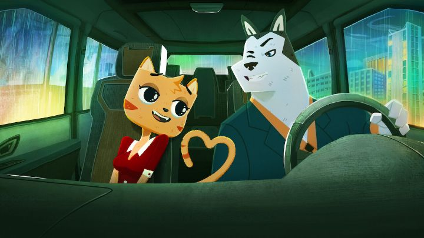

Disclaimer: Plot spoilers.When the 2020 Netflix movie "Hayop Ka! The Nimfa Dimaano Story" (simply known as "Hayop Ka!" or translated as "You Animal!") was teased, its press focused on it being one of the first original animated films from the Philippines, and was proud of it. Despite the small production team, it looked pretty good too in terms of quality. Perhaps it would be the start of a larger animation industry in the country, as the filmmakers intended... but of course, most curious viewers would be more interested in the furry-sex-comedy storyline.Inspired by tele-novellas (aka: steamy soap operas), and the long history of humanized animal cartoon characters, "Hayop Ka!" is a comedy-drama about Nimfa the cat, a working-class woman in a loving relationship with Roger the dog. Neither make much money, living a modest life with each other. However hunky and sincere Roger might be, Nimfa quietly longs for variety, looking for someone to cheat with without realizing it. And then she meets Sir Inigo, a rich, handsome dog that runs a successful company. Knowing it's wrong, she keeps looking for opportunities for Inigo to sleep with her (he's initially ignorant, but his reputation for being a womanizer hints that he doesn't hold out for long), until the deed is done. Roger's quick to find out, and is the jealous type, so Nimfa as to make a decision about what to do with her self-made love triangle after a short period of excitement.We don't get any explicit sex scenes or nudity (that'd be weird here with animals), but there's plenty of saucy and raunchy euphemisms and dirty talk. The inspiration from soap operas is clear, in the way jealously, temptation and plot twists occur. There are a number of modern cultural references, including some internet-meme copies in the end credits. And of course, Nimfa's watched too many movies and tv shows, and her misunderstanding of things going quicker than they really are is adorably goofy. The puns in the first few minutes give a good sense of what to expect: the "alternate," inappropriate words for dogs and cats and other animals can be surprisingly effective for this type of story! For adults, the whole premise is fun in a naughty sort of way, and it works. A tale of different classes, and the consequences of cheating in a relationship, it's both funny and riveting as you watch to see what happens.... until it isn't. Not unlike another other foriegn indie film about young women and one-time flings, "Aya of Yop City," this results in the inevitably of Nimfa getting pregnant, and only discovering it after ruining her relationship with the true father. It's a stark reminder of the reality women face in love compared to men. Gratefully, the movie doesn't spend much time calling poor Nimfa a hoare for her actions (even though everything that occurs was her fault). But by this point, it feels much more serious, and not funny (even if the resulting cat-fights are very much in vein of a soap opera). Revealed in still images over the credits, we learn that Nimfa has the baby, and due to her mistakes, raises it as a single mother (perhaps with a new, non-judgemental friend), a symbol of the resilience and strength of the modern-day woman, but ignoring any reminder of the burden and responsibility that will never allow her back to her old life. I'm not sure what to make of this. There is some controversy around the movie online, apparently, especially from within the origin country. As an ignorant outsider, I didn't see anything wrong with it; it's a funny movie. I hope audiences don't take it too seriously and accept it for what it is. The studio already announced tentative plans for a sequel spin-off, and possibly a third movie as a spin-off, and seems to have a confident sense of portraying all elements of Philipeno pop culture, without any restraints, for international audiences to pay attention to.The visual design is quite good here. The animal characters are well designed, expressive and memorable, with a style that feels at home to a Cartoon-Network television show, but with a slightly better sense of quality. Animation is with Adobe Flash (or some equivalent), but the motion fits the visual design well, not cheap as one would expect. The result still feels like it was made by a small team, but a very competant small team, not overly ambitious but still a pleasant cartoon. Of course, the film is released in the native language of the Philippines (Tagalog, I think). However, the studio's social media channels also posted English-langauge clips, making it clear that Netflix would probably release an English version, if not also in other languages. But the film remained off of the Netflix American region for so long... what was going on? After finally seeing the movie (courtesy of Montreal's 2021 online "Fantasia Film Festival"), I discovered that the movie is actually bilingual, using the native language for casual speaking, and English for formal conversations, especially for richer characters of a different class. Both are spoken and acted well, and using two languages adds a dimension to the story and the setting. All that said, there are still some English clips online that don't match with the original language audio track, so I still expect a full English dub to be released somewhere... a Q&A at the festival revealed that the filmmakers purposely negotiated for Netflix NOT to give a worldwide release, in hopes of a wider festival and theater circuit, but this would likely change before long.The most exceptional part about "Hayop Ka! The Nimfa Dimaano Story" is the country it came from (which most international viewers might be curious of, but ultimately not care about), and the saucy premise (which will turn off some viewers for one reason or another). Beyond that, the movie's a very solid one, and not much more than that. Maybe I'm not giving enough praise: one more exceptional thing is how original the movie is to virtually any other animated film to date. Even if some of its qualities don't seem all that special, it should be appreciated for what it is, and how rare that is to find.
- "Ani" More reviews can be found at : https://2danicritic.github.io/ Previous review: review_Have_a_Nice_Day Next review: review_Heaven's_Lost_Property